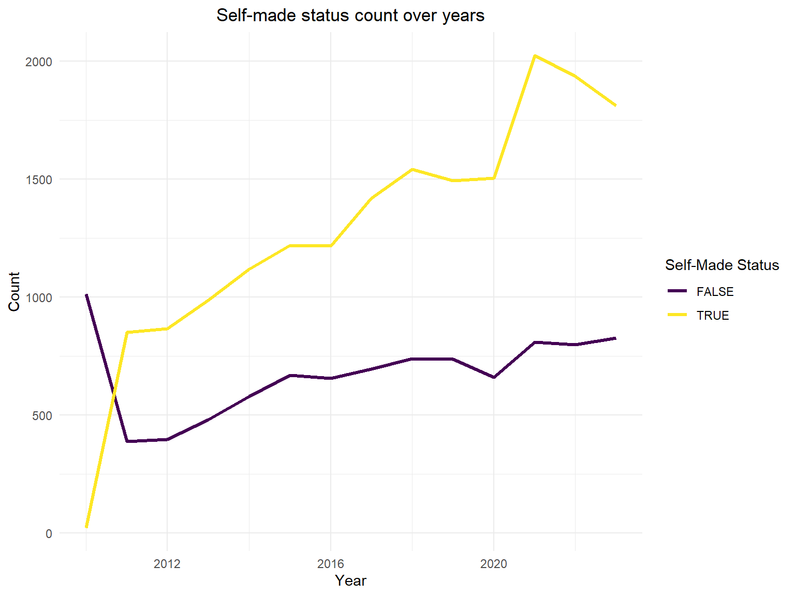
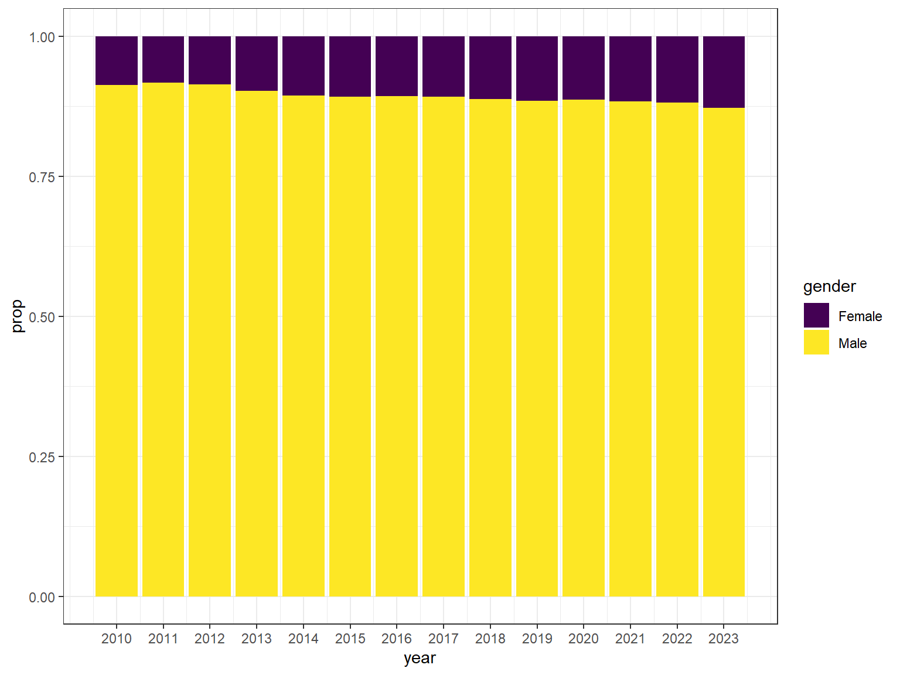
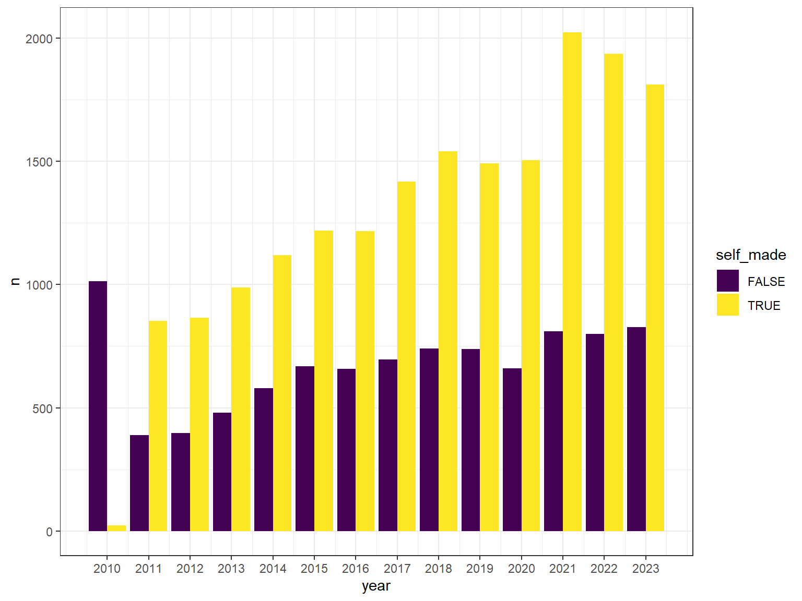
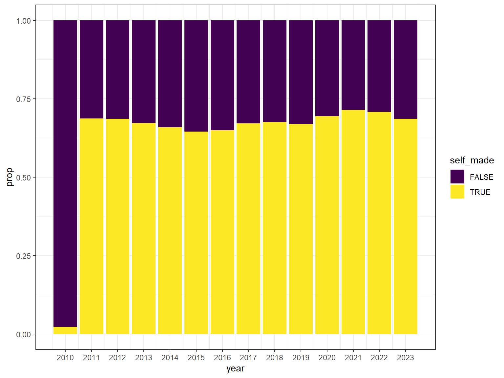

EDA_Longitudinal
Shuchen Dong, Sitian Zhou, Mengxiao Luan
r Sys.Date()`
load data
billionaire_gdp_indus_usa <- read.csv("../data/billionaire_gdp_indus_usa.csv")
billionaire_gdp <- read.csv("../data/billionaire_gdp.csv")
gdp <- read.csv("../data/gdp.csv")GDP-Temporal Wealth Patterns:
Examine the rise and fall of billionaire wealth across different economic cycles, including booms, busts, and recoveries.
5 different country GDP overtime.
countries <- c("USA", "CHN", "RUS", "JPN", "DEU")
gdp_selected <-
gdp[gdp$code %in% countries & gdp$year >= 2010 & gdp$year <= 2022, ]
# draw GDP plot
ggplot(data = gdp_selected, aes(x = year, y = gdp, color = code)) +
geom_line() +
theme_minimal() +
labs(title = "GDP Change from 2010 to 2022",
x = "Year", y = "GDP",
color = "Country Code") +
scale_x_continuous(breaks = 2010:2022) 
for billionaire_gdp, net_worth for different country top 5 over time
data_filtered <- billionaire_gdp %>%
filter(year >= 2010 & year <= 2023)
# group by country net worth over time
total_net_worth_by_country <- data_filtered %>%
group_by(country_of_citizenship) %>%
summarise(total_net_worth = sum(net_worth, na.rm = TRUE))
# net worth top 5 countries
top_countries <- total_net_worth_by_country %>%
top_n(5, total_net_worth) %>%
pull(country_of_citizenship)
top_countries_data <- data_filtered %>%
filter(country_of_citizenship %in% top_countries)
total_net_worth_by_year_country <- top_countries_data %>%
group_by(year, country_of_citizenship) %>%
summarise(total_net_worth = sum(net_worth, na.rm = TRUE))
# plot
ggplot(total_net_worth_by_year_country, aes(x = year, y = total_net_worth, group = country_of_citizenship, color = country_of_citizenship)) +
geom_line() +
theme_minimal() +
labs(title = "Total Net Worth of billionaire by Top 5 Countries from 2010 to 2023",
x = "Year", y = "Total Net Worth (Billions)",
color = "Country of Citizenship")
Gender
billionaires_filtered <- billionaire_gdp %>%
filter(year >= 2010 & year <= 2022) %>% na.omit()
total_net_worth_by_year_gender <- billionaires_filtered %>%
group_by(year, gender) %>%
summarise(total_net_worth = sum(net_worth, na.rm = TRUE))
ggplot(total_net_worth_by_year_gender, aes(x = year, y = total_net_worth, color = gender)) +
geom_line() +
theme_minimal() +
labs(title = "Total Net Worth by Gender from 2017 to 2022",
x = "Year", y = "Total Net Worth (in billions)",
color = "Gender")
Industry-Lifecycles and Billionaire Wealth
Explore how technological disruptions in various sectors impact the net worth and ranking of billionaires over time.
industry gdp change over time
data_filtered <- billionaire_gdp_indus_usa %>%
filter(year >= 2017 & year <= 2022) %>%
drop_na(industry_gdp)
total_gdp_by_year_industry <- data_filtered %>%
group_by(year, industries) %>%
summarise(total_gdp_by_year_industry = sum(industry_gdp, na.rm = TRUE))
total_gdp_by_year_industry |>
ggplot(aes(x = year, y = total_gdp_by_year_industry, group = industries, color = industries)) +
geom_line() +
theme_minimal() +
labs(title = "Total Industry GDP by Year from 2017 to 2022 in USA",
x = "Year", y = "Industry GDP",
color = "Industries")
find different city of residence billionaire net worth change over time
data_filtered <- billionaire_gdp %>%
filter(year >= 2010 & year <= 2023, country_of_citizenship == "United States")
net_worth_by_city_year <- data_filtered %>%
group_by(year, city_of_residence) %>%
summarise(total_net_worth = sum(net_worth, na.rm = TRUE)) %>%
ungroup()
# top5
top_cities_by_year <- net_worth_by_city_year %>%
group_by(year) %>%
slice_max(order_by = total_net_worth, n = 5) %>%
ungroup()
ggplot(top_cities_by_year, aes(x = year, y = total_net_worth, group = city_of_residence, color = city_of_residence)) +
geom_line() +
theme_minimal() +
labs(title = "Top 5 Cities' Net Worth Trend by Year (2010-2023)",
x = "Year", y = "Total Net Worth (Billions)",
color = "City of Residence") +
theme(legend.position = "bottom")
Here are the top 5, and there are indeed 5 more. This is because in some years, the total city of net worth is surpassed by others.
count self_made over time
self_made_trend <- billionaire_gdp %>%
group_by(year, self_made) %>%
summarise(count = n(), .groups = 'drop')
ggplot(self_made_trend, aes(x = year, y = count, color = self_made, group = self_made)) +
geom_line() +
theme_minimal() +
labs(title = "Self-Made Status Count Over Years",
x = "Year", y = "Count",
color = "Self-Made Status")
update
number of billionaires in different gender groups across years
billionaire_gdp |>
drop_na(gender) |>
group_by(year, gender) |>
summarize(n = n()) |>
ggplot(aes(x = year, y = n, fill = gender)) +
geom_bar(position="dodge", stat="identity") +
scale_x_continuous(breaks = 2010:2023)# scale it to 1 to analyze the proportions
bil_gender_prop <-
billionaire_gdp|>
drop_na(gender) |>
group_by(year, gender) |>
summarize(n = n()) |>
group_by(year) |>
mutate(total = sum(n),
prop = n/ total)
bil_gender_prop |>
ggplot(aes(x = year, y = prop, fill = gender))+
geom_bar(position="stack", stat="identity") +
scale_x_continuous(breaks = 2010:2023)
number of billionaires in different industries across years (not very informative?)
billionaire_gdp |>
drop_na(industries) |>
group_by(year, industries) |>
summarize(n = n()) |>
ggplot(aes(x = year, y = n, fill = industries)) +
geom_bar(position="stack", stat="identity") +
scale_x_continuous(breaks = 2010:2023) ## A quick overview: trend of average net worth of all billionaires
across year
## A quick overview: trend of average net worth of all billionaires
across year
billionaire_gdp |>
group_by(year) |>
summarize(ave_net_worth = mean(net_worth)) |>
ggplot(aes(x = year, y = ave_net_worth)) +
geom_line() +
geom_point() +
scale_x_continuous(breaks = 2010:2023) takeaways 1. net worth plummeted in 2016 and 2020, and then
skyrocketed in 2021
takeaways 1. net worth plummeted in 2016 and 2020, and then
skyrocketed in 2021
billionaire_gdp |>
drop_na(self_made) |>
group_by(year, self_made) |>
summarize(n = n()) |>
ggplot(aes(x = year, y = n, fill = self_made)) +
geom_bar(position="dodge", stat="identity") +
scale_x_continuous(breaks = 2010:2023)
# scale it to 1 to analyze the proportions
bil_selfmade_prop <-
billionaire_gdp|>
drop_na(self_made) |>
group_by(year, self_made) |>
summarize(n = n()) |>
group_by(year) |>
mutate(total = sum(n),
prop = n/ total)
bil_selfmade_prop |>
ggplot(aes(x = year, y = prop, fill = self_made)) +
geom_bar(position="stack", stat="identity") +
scale_x_continuous(breaks = 2010:2023)
billionaire_gdp_indus_usa |>
drop_na(industry_gdp) |>
group_by(year, industries) |>
summarize(n = n()) |>
ggplot(aes(x = year, y = n, fill = industries)) +
geom_bar(position="stack", stat="identity") +
scale_x_continuous(breaks = 2017:2022)
bil_us_indus_prop <-
billionaire_gdp_indus_usa |>
drop_na(industry_gdp) |>
group_by(year, industries) |>
summarize(n = n())|>
group_by(year) |>
mutate(total = sum(n),
prop = n / total)
bil_us_indus_prop |>
ggplot(aes(x = year, y = prop, fill = industries)) +
geom_bar(position="stack", stat="identity") +
scale_x_continuous(breaks = 2017:2022)